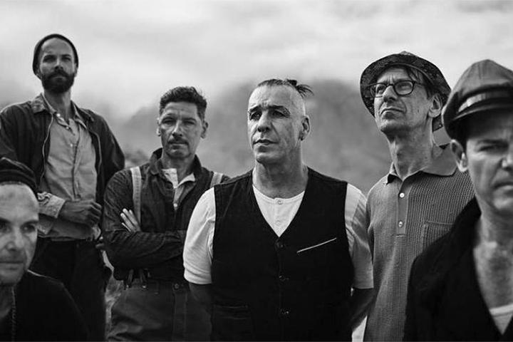

Rammstein were one of the first Neue Deutsche Härte bands; their Herzeleid album led the music press to coin that term. Their style of music has generally had a positive reception from music critics. Commercially, the band have been very successful, earning many No. 1 albums as well as gold and platinum certifications in countries around the world. Their grand live performances, which often feature pyrotechnics, have played a part in their popularity growth. Despite success, the band have been subject to some controversies, with their overall image having been subject to criticism - for instance, the uncensored music video for "Pussy" was interspersed with scenes of hardcore pornography and the song "Ich tu dir weh" forced Liebe ist für alle da to be re-released in Germany with the song removed from the album due to its graphic lyrics about sex. On 27 March 1996, Rammstein performed on MTV's Hanging Out in London, their first performance in the UK. Their first major boost in popularity outside Germany came when Nine Inch Nails frontman Trent Reznor chose two Rammstein songs, "Heirate mich" and "Rammstein", during his work as music director for the David Lynch 1997 film Lost Highway. The soundtrack for the film was released in the U.S. in late 1996 and later throughout Europe in April 1997. Rammstein went on to tour through Germany, Austria, and Switzerland from September to October 1996, performing an anniversary concert on 27 September called "100 years of Rammstein". Guests to the concert included Moby, Bobo, and the Berlin Session Orchestra, while Berlin director Gert Hof was responsible for the light show.